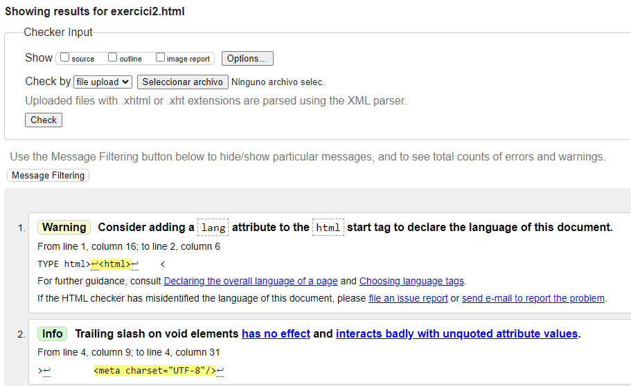

Nombre Diametro relativo Periodo orbital Número de lunas
--------------------------------------------------------------------------------------------------------
Mercurio 0,382 0,24 años 0
Venus 0,949 0,62 años 0
Tierra 500 1 año 1
Marte 0,532 1,88 años 2
